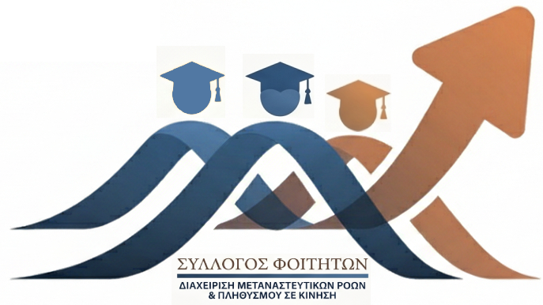

Έναρξη Λειτουργίας Ηλεκτρονικού Αποθετηρίου
Τίθεται σε λειτουργία η στατική πλατφόρμα συγκέντρωσης και προβολής των ακαδημαϊκών εργασιών των φοιτητών του μεταπτυχιακού προγράμματος.

Αποθετήριο Εργασιών & Σύλλογος Φοιτητών / Αποφοίτων
Το Διεπιστημονικό Πρόγραμμα επικεντρώνεται στη διερεύνηση, διαχείριση και ανάλυση των σύγχρονων μεταναστευτικών ροών, της προστασίας συνόρων και των θεμελιωδών δικαιωμάτων.
Το επίσημο καταστατικό λειτουργίας και οι αρχές του Συλλόγου.
Μπορείτε να ανοίξετε ή να μεταφορτώσετε το επίσημο κείμενο:
Προβολή Καταστατικού (PDF)Τίθεται σε λειτουργία η στατική πλατφόρμα συγκέντρωσης και προβολής των ακαδημαϊκών εργασιών των φοιτητών του μεταπτυχιακού προγράμματος.
Παρακαλούνται οι απόφοιτοι και φοιτητές να αποστέλλουν τις εγκεκριμένες εργασίες τους για ψηφιοποίηση και καταχώριση.